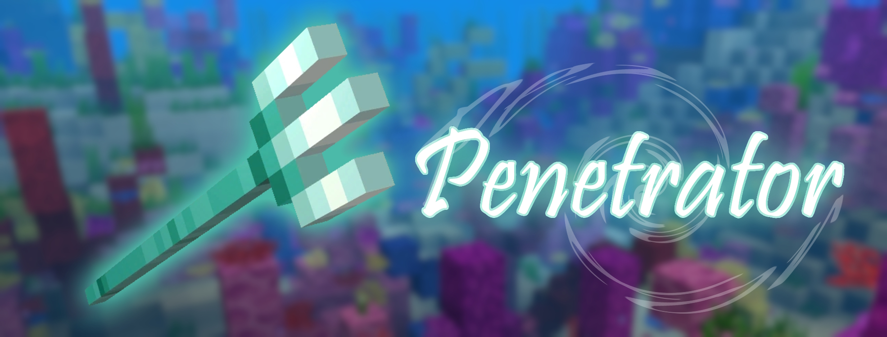
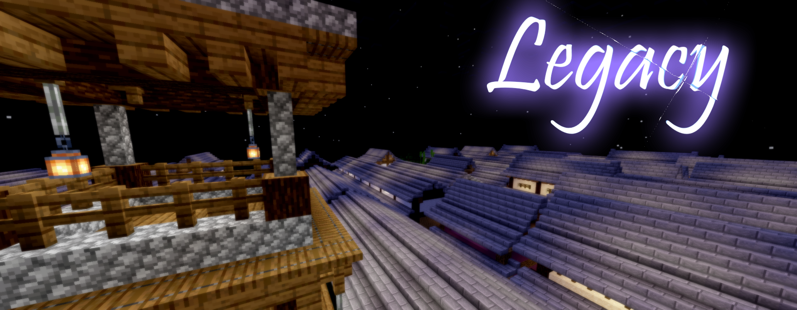
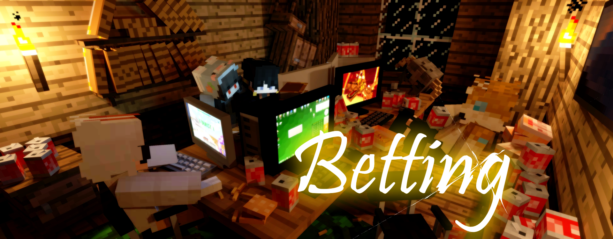

PHASE-04
PHASE-04には「新ウェポン」「新サプライ」が追加されます。
各種ウェポンの調整のほか、このフェーズではシステムが大幅に更新されます。
HELLO NEWCOMER
イエティ ❝Yeti❞
雪国で作られたスノーゴーレムが人の姿に化けて、イミテイターとしてBowyersMCへ参戦します。
使用時に雪玉を5個生成し、それを相手に投げつけることで一定時間凍結させる能力をもっています。
ウェポン使用中は水の上を歩くことができ、有利に立ち回れる場面が生まれるでしょう。
敵の動きを止める、エイム任せの変化系ウェポン！
更に詳しい情報はウェポン紹介ページより。
HELLO NEW SUPPLY
ペネトレーター ❝Penetrator❞

イエティが海洋生物から盗み出したサプライウェポン。
5秒というかつてない極僅かなクールタイムで繰り出される、貫通するトライデントが登場します。
遮蔽越しの接近戦で、圧倒的有利をその手に。
更に詳しい情報はウェポン紹介ページより。
HELLO NEW ARENA
和風世界 ❝Legacy❞

PHASE-02で実装されたお城のLegacyとは別に、長屋の街並みを舞台とした新しいLegacyが登場します。
入り組んだ街並みと、細道で区切られた長屋により、高所からの索敵を回避できます。
HELLO NEW SYSTEM
ベット ❝Betting❞

ティアの高いウェポンを使うプレイヤーは、カルマの賭けができるようになります。
ゲームに勝利して、カルマを多く集めよう。
ただし、負け続けてカルマがなくならないように...
更に詳しい情報はPhasing概要ページより。
WEAPON ADJUSTMENTS
PHASE-03での弓師の意見を大いに受け入れ、一部ウェポンのバランスが調整されます。
 釣竿 ❝FishingBow❞
釣竿 ❝FishingBow❞
・右クリックトリガーの廃止
・矢を左クリックで発射するように変更（長押しして射撃し続けられなくなりました）
・クリティカル矢をスニーク+左クリックで発射するように変更
 エアライド ❝Airride❞
エアライド ❝Airride❞
・羽ばたける間隔を0.4秒から0.6秒に変更
・羽ばたくごとに低速落下のエフェクトがつくように変更
・羽ばたきの横方向速度を、PHASE-01の倍率に
・効果継続時間を1秒増加
 リーパー ❝Leaper❞
リーパー ❝Leaper❞
・エメラルドブロックをスライムブロックに変える仕様を削除
・右クリックで小ジャンプ、スニーク併用で特大ジャンプの2種類のジャンプに変更
・小ジャンプのCTを7秒に設定
 ドーピング ❝Doping❞
ドーピング ❝Doping❞
・ダイヤモンドブロックの速度倍率を1.5倍から1.4倍に変更
・ダイヤモンドブロックの高さ倍率を通常より低く変更
 ヘイズ ❝Haze❞
ヘイズ ❝Haze❞
・ヘイズ展開時、使用者が範囲を分かるようにパーティクルを追加
 ショックウェーバー ❝ShockWaver❞
ショックウェーバー ❝ShockWaver❞
・左クリックトリガーの物体発射速度を2.2倍から2倍に少し低減
 シールド ❝Shield❞
シールド ❝Shield❞
・チャージ秒数を7秒に変更
 スワッパー ❝Swapper❞
スワッパー ❝Swapper❞
・捕捉できる余裕範囲を3ブロックから2ブロックに変更
 トラッパー ❝Trapper❞
トラッパー ❝Trapper❞
・半径5ブロックの最も近い未起動の罠を発動させる左クリックトリガーの追加
 ヴァニッシャー ❝Vanisher❞
ヴァニッシャー ❝Vanisher❞
・殺気のパーティクルの高さサイズを大幅に増加
・殺気のパーティクルの出現を、弓や釣竿を持った時からウェポンを所持していない時に変更
 イエティ ❝Yeti❞
イエティ ❝Yeti❞
・ひとつにつき加算される停止時間を1.5秒から1秒に変更
SYSTEM ADJUSTMENTS
Leveling
PHASE-03で試験的に実装したLevelingがようやく常設化されました。
ウェポンの個数が8つに固定され、初期ウェポンのランダム化、さらにプレイヤーごとのウェポンローテーションになりました。
さらにこのモードのみ、敵の鎧破壊でカルマが得られるようになります。
練習場
今までは全てのアリーナがひとつになった大きなワールドを、ウェポン練習のワールドにしていました。
そのため、地下鉄までのアクセスが極めて悪かったり、和風世界のお城に行くまでにかなり時間を要していました。
ホットバーのマップアイテムを使用すると、アリーナセレクターが表示されるのでお好きなアリーナへ行けるようになりました。
オシゴトをできるアリーナから市街地が除外されました。ショッピングモールでのみ行えます。
観戦機能
全てのゲームモードに観戦機能が実装されました。
ロビーにいるとき、ホットバーのエンダーチェストのメニューから観戦に移動できるようになります。
お気に入りパーティクル
ティアを更新するごとに得られるパーティクルを自由に設定できるようになりました。
エンダーチェストのメニューから、それぞれのウェポンのパーティクルを変更できます。
ティア
最高ティアをEIGHTからVERTEX(頂点)に名称変更しました。
このティアに達成するにはキル数4000という極めて無謀な値を達成する必要があります。
VERTEXを達成するとそのウェポンのマークが「V」に変更されます。
さらにイミテイターのスキンが変更されます。
ティアがTHREE以上にいくと、任意のティアごとにタグが変わるようになります。
詳しくはこちら
その他細かな修正
・所持カルマランキングを追加
・釣竿と弓の変更機能を追加 (Pocket限定)
・ゲーム内チャットと通常チャットの差を色で可視化
・ステータス表示の勝率を％表示に変更
・ステータス表示の平均キルを少数第三位までに変更
・弓師のステータス確認アイテムを修正
・スキンが変えられてしまう問題の修正
・マントを外せなくなる問題の修正
・初期ウェポンに「ランダム」を追加
ACCEPT REQUEST
釣り竿について
・依頼人: うぷぬし#7690
・依頼日時: 2023/03/18 18:58
平均キルと勝率を詳しく
・依頼人: Kailab2000#8706
・依頼日時: 2023/03/21 16:12
ヒットでもkarmaを稼ぎたい
・依頼人: roytaroo#6506
・依頼日時: 2023/03/26 23:16